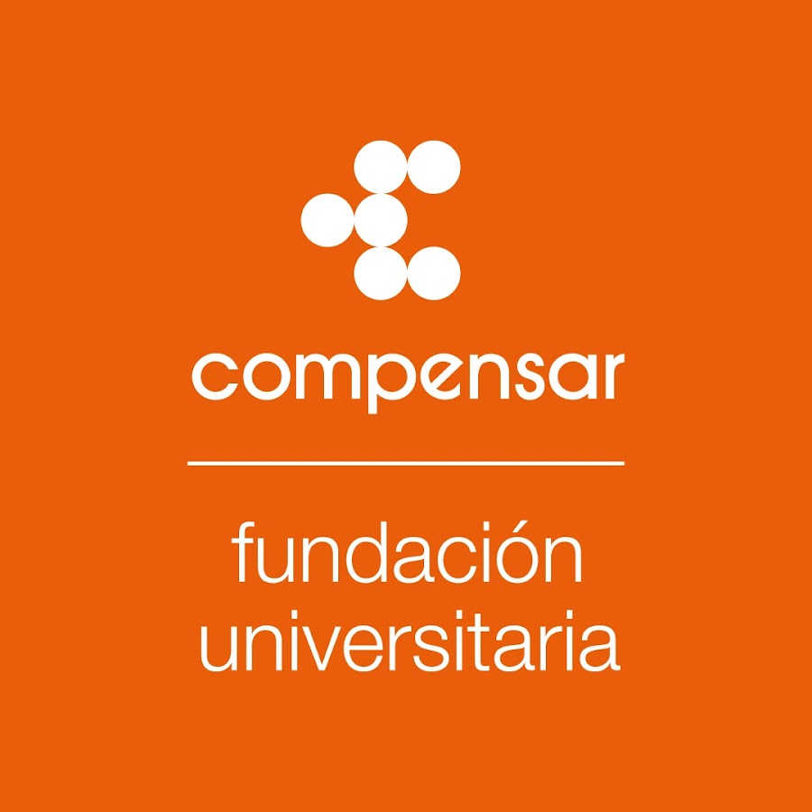

Perfil
Técnico con 4 años en soporte de infraestructura en sitio y de manera remota a cliente interno y externo, con conocimientos en mantenimiento preventivo y correctivo a equipos de cómputo, cableado estructurado, peinado y marquilleo de cable, instalación y administración de CCTV, administración de plataformas y usuarios (usuarios de dominio, correos electrónicos, telefonía VOIP, entre otros), herramientas ofimáticas, Microsoft 365, manejo de inventario tecnológico
Experiencia Laboral
Coordinador de aplicaciones
Empresa: Corporación Educativa Indoamericana
Fecha: Sep 2022
Coordinar las aplicaciones institucionales (Sistema académico, Mesa de servicios, Tenant Microsoft 365, alojamiento de aplicaciones institucionales, gestion de los dominios. Entre otros )
Auxiliar de infraestructura
Empresa: Proasistemas
Fecha: Jul 2019 - Sep 2022
Soporte a cliente interno de la empresa en sitio y remoto -Administración de usuarios y plataformas (Dominio, CRM, Antivirus, Telefonía VoIP) -Manejo y soporte frecuente sobre Office 365 y OneDrive -Instalación y administración de CCTV -Cableado estructurado, etiquetación de cableado, adecuación de Rack -Administración de red, (Access point) -Instalación de impresoras -Mantenimiento preventivo y correctivo de equipos de cómputo, formateo en Windows y Linux -Manejo de inventario tecnológico
Educación

Institución: SENA
Título: Tecnico en sistemas
Año: 2020

Institución: Ucompensar
Título: Ingeniero de sistemas
Año: Estudiando actualmente
Habilidades
- Analisis
- Resolucion de problematicas
- Manejo de publico
- Disciplinado
Contacto
Email: joseortizz1499@hotmail.com
Teléfono: 3155334421